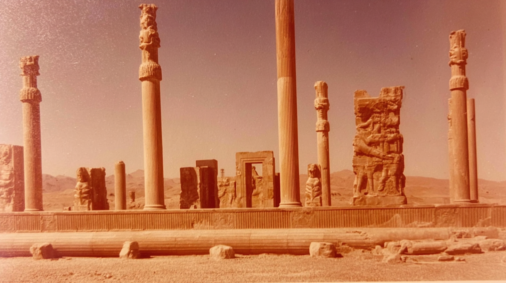
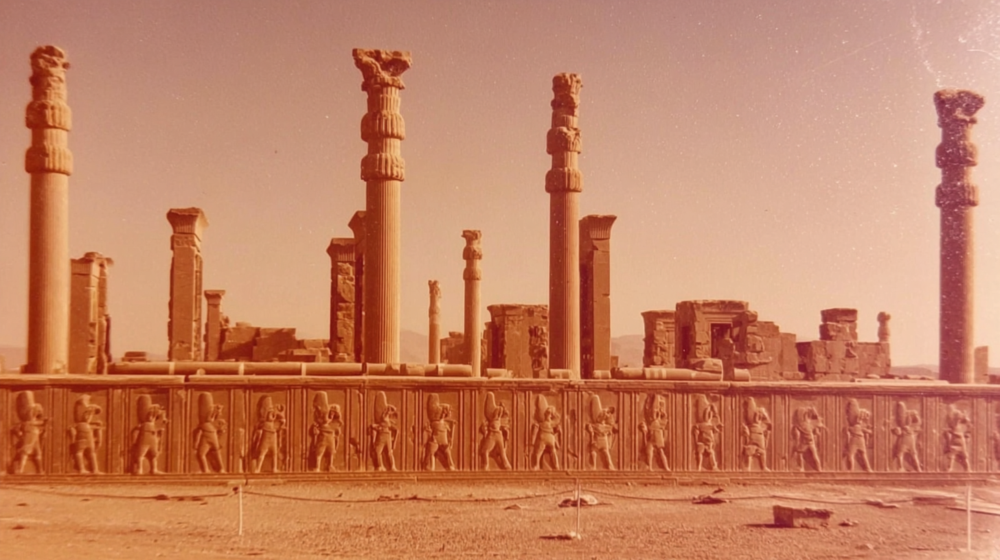
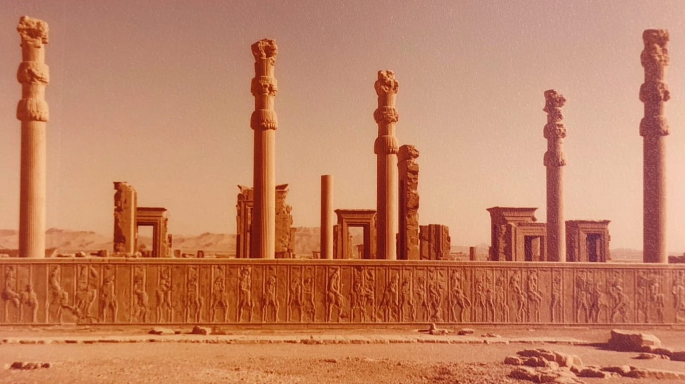
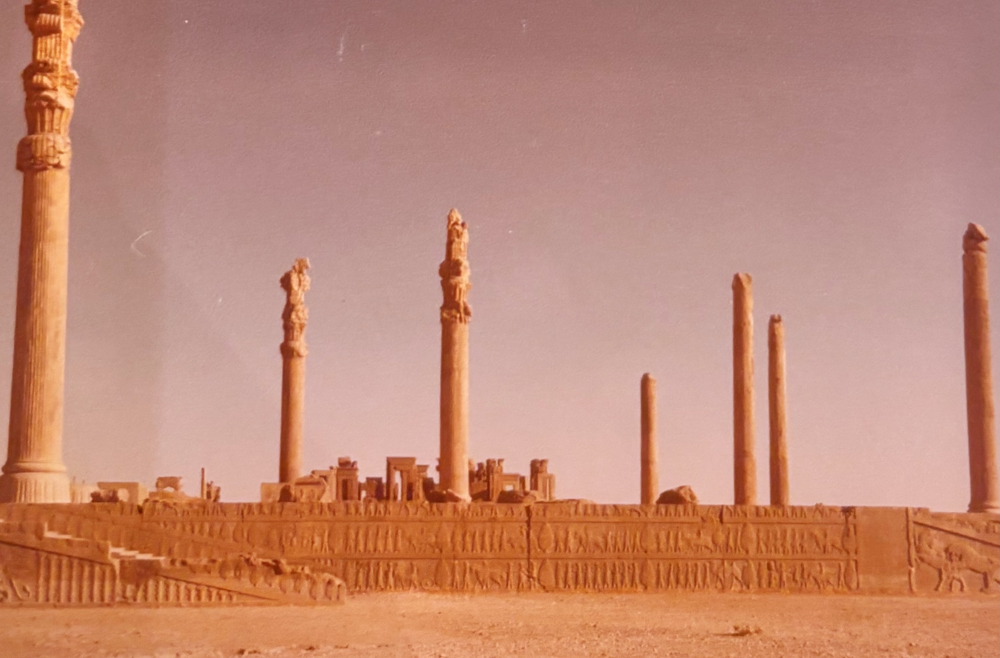
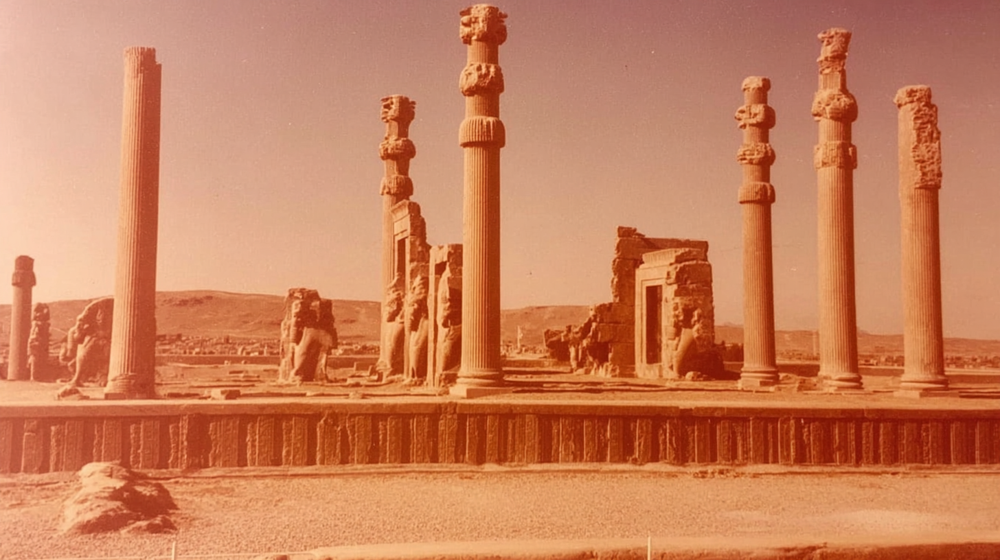

A wide view shows tall stone columns and monumental statues rising above a carved terrace, with mountains stretching across the horizon behind the ruins.
A long carved wall filled with marching figures runs beneath towering columns and scattered gateways in the distance.
A detailed frieze of repeated carved figures lines the base of the platform, while tall columns and ancient doorframes stand beyond it.
distance shot of percepoplis , 70's analogue photograph of Persepolis columns. sun-bleached colours, subtle dusty pink and muted ochre tones, soft film grain, heat shimmer distortion, textured details, imperfect composition,
35mm kodachrome, muted natural colours, low contrast grading, soft highlights, hazy atmosphere, arid heat.. Light film grain, dimpled texture, organic texture, low digital sharpness, no vivid colours. Shot like contemporary cinema, realistic, alive, subtle faded blurry shutter motion